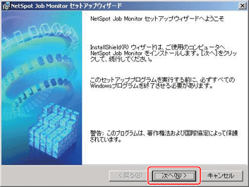
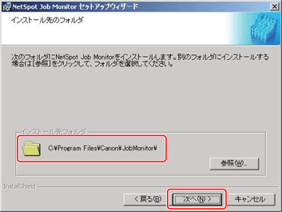
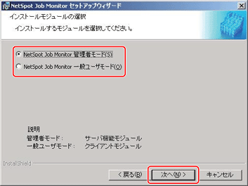
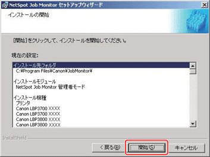
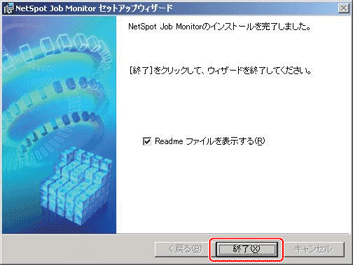

NetSpot Job Monitorのインストール
NetSpot Job Monitorのインストール手順を説明しています。
Windows NT 4.0/2000/XP用のNetSpot Job Monitorには、管理者用のNetSpot Job Monitorと一般ユーザー用のNetSpot Job Monitorがあります。どちらのNetSpot Job Monitorをインストールするかにより、インストール方法が異なります。
|
NetSpot Job Monitorの種類
|
インストールに必要な権限
|
印刷状況を確認できるプリンターの種類
|
|
管理者用
|
Windows NT 4.0/2000/XP
のAdministrators
|
NetSpot Job Monitorが対応する全プリンター（下記参照）
|
|
一般ユーザー用
|
Windows NT 4.0/2000/XP
のAdministrators
|
共有設定されているプリンターのみ
|
管理者用のNetSpot Job Monitorでは、以下のプリンターの印刷状況を確認できます。
ローカル接続されているプリンター（iRシリーズを除く）
お使いのコンピューターからTCP/IPプロトコルまたはNetWare環境で接続されているプリンター
共有設定されているプリンター
一般ユーザー用のNetSpot Job Monitorでは、共有設定されているプリンター（→「
印刷状況を確認できるプリンターの種類」）の印刷状況のみ確認できますので、他のWindows NT 4.0/2000/XPをサーバーとして使用している場合などにお使いください。そのとき、サーバーとして使用しているWindows NT 4.0/2000/XPには、管理者用のNetSpot Job Monitorをインストールしてください。
1
コンピューターを起動します。
インストール前に、他のアプリケーションソフトウェアをすべて終了してください。
Windows NT 4.0/2000/XPをお使いの場合、起動した際に、必ずAdministratorsのメンバーとしてログオンしてください。
2
付属のCD-ROMをコンピューターにセットします。
CD-ROMメニューが自動的に表示されます。
CD-ROMメニューが起動しない場合は、［マイコンピュータ］（Windows Vista/Server 2008の場合は[コンピュータ]、Windows 7の場合は[コンピューター］）のCD-ROMのアイコンをダブルクリックしてください。
|
メモ
|
|
お使いの機種によっては、CD-ROMに同梱されていません。キヤノンホームページからダウンロードしてご使用ください。
|
3
CD-ROMメニューの［インストール］をクリックします。
4
［NetSpot Job Monitor］にチェックマークが付いていることを確認したあと、［インストール］をクリックします。
チェックマークが付いているソフトウェアは、順次インストールされます。必要に応じて、チェックマークを外します。
セットアップウィザードが表示されます。
5
［次へ］をクリックします。

使用許諾契約書が画面に表示されます。
6
内容を確認して、［使用許諾契約の条項に同意します］を選択したあと、［次へ］をクリックします。
お使いの環境によっては、コンピューターの再起動を促すメッセージが表示される場合があります。その場合は、コンピューターの再起動後にインストールを続けてください。
7
インストール先を確認したあと、［次へ］をクリックします。

［参照］をクリックして、インストール先のディレクトリーを任意に指定することもできます。
8
Windows NT 4.0/2000/XPでAdministratorsの権限がある場合は、［NetSpot Job Monitor 管理者モード］または［NetSpot Job Monitor 一般ユーザモード］を選択したあと、［次へ］をクリックします。

モジュールの種類
管理者モード：
プリンター管理などのサーバー機能モジュールをインストールします。
一般ユーザーモード：
プリンターの状態表示などのクライアントモジュールをインストールします。
Windows 98/Meの場合や、Windows NT 4.0/2000/XPで管理者用をインストール済みの場合は、上図の画面は表示されません。手順
9に進んでください。
設定内容を確認したあと、［開始］をクリックします。

NetSpot Job Monitorのインストールが開始されます。
インストールが終了すると、［インストールの完了］ダイアログボックスが表示されます。
設定を変更したい場合は、［戻る］をクリックして、再度設定しなおしてください。
Windowsファイアウォール機能を持っているOSをお使いの場合に、メッセージが表示されたときは、［はい］または［いいえ］をクリックします。
［はい］をクリックすると、NetSpot Job Monitorなどのアプリケーションに対するWindowsファイアウォールのブロックが解除され、プリンターの状態が確認できるようになります。
［いいえ］をクリックすると、NetSpot Job Monitorは使用できなくなります。
10
［終了］をクリックします。

複数のソフトウェアをインストールする場合、ソフトウェアが順次インストールされます。
［終了］をクリックすると、Readmeが表示されます。Readmeには重要な情報が記載されていますので、お読みください。
11
セットアップウィザードが終了したあと、［次へ］をクリックします。
12
［再起動］または［終了］をクリックします。
以上でインストールの作業が終了しました。